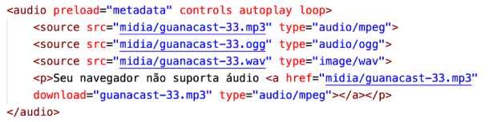
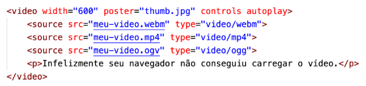
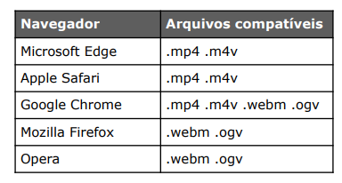

Nesse exemplos veremos como fazer a inserção e utilização de audios em nosso código e no nosso site.
nesse exemplo acima o código ficou escrito da seguinte forma
audio preload="metadata" controls loop
source src="midia/As You Fade Away - NEFFEX.mp3" type="audio/mpeg"
source src="midia/As You Fade Away - NEFFEX.ogg" type="audio/ogg"
source src="midia/As You Fade Away - NEFFEX.wav" type="audio/wav"
p O seu navegar infelizmente não e compatível com a reprodução de audio /p
/audio

Temos que levar em consideração que a mesma logica usada na responsividade das imagens e aplica aos audios ele sempre seguira essa sequencia de reprodução MP3 - OGG - WAV caso ele não tenha conseguido reproduzi nenhum dos arquivos ele vai apresentar a mensagem contida no "p"
o parâmetros "preload=" e "controls" são obrigatórios
Agora veremos como podemos incorporar um video com a hospedagem propiá ou seja interna no nosso sistema
o código para implementação de videos é exatamente igual ao de implementação de audios segue imagem abaixo com algumas diferenças
Nem todos os navegadores tem seus formatos nativos para reprodução iguais segue um imagem abaixo de todos os formatos e em quais sites eles são aceitos
Para voltar a pagina principal dos exercícios Clique Aqui.
Nesse exemplo veremos como fazer o anexo ao código de videos com links externos ou seja hospedados fora do seu servidor
nesse caso de forma simples usamos a propia ferramenta de compartilhamento do YouTube assim selecionando a opção "Incorporar".
Para voltar a pagina principal Clique Aqui.